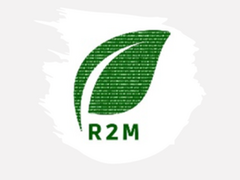
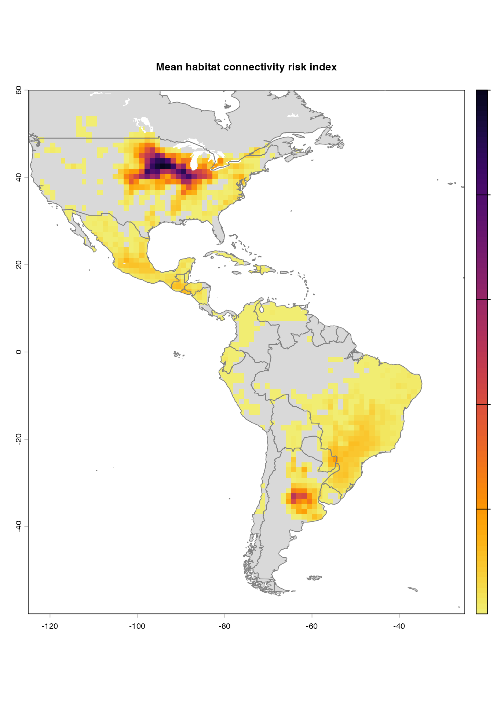
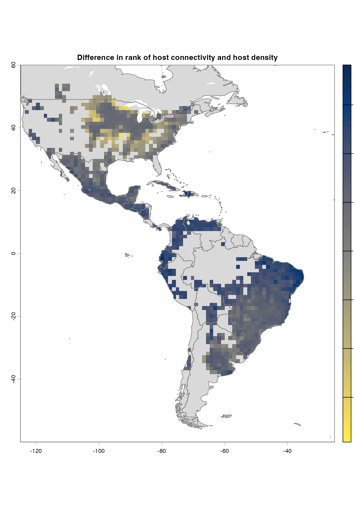
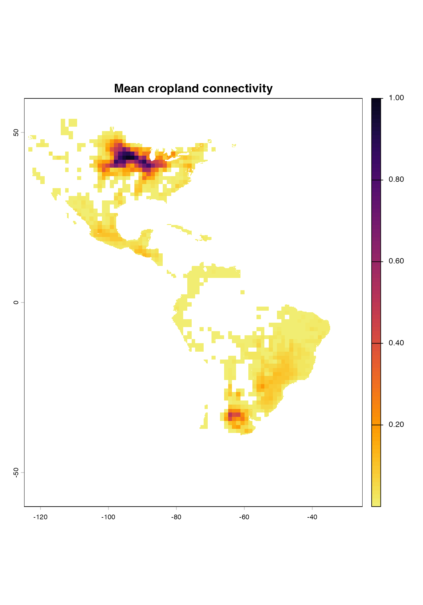
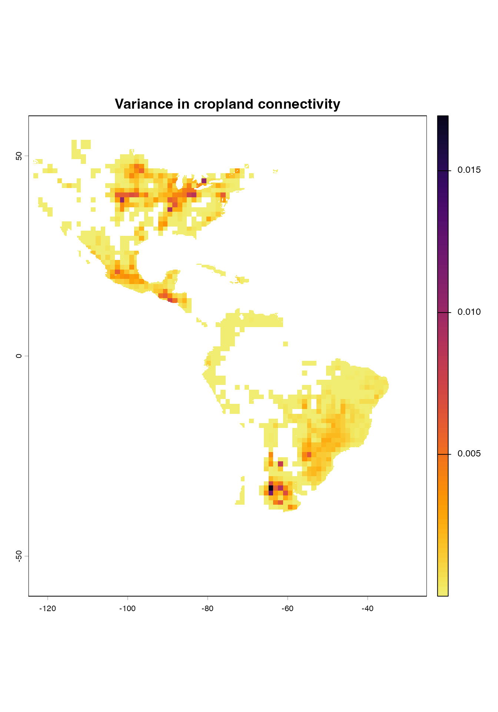
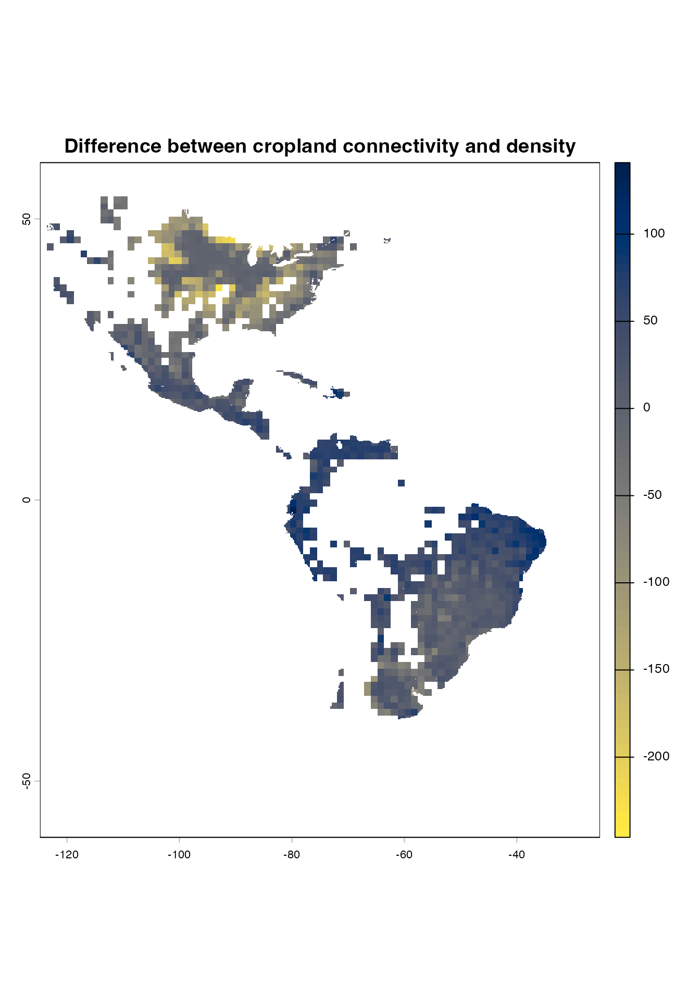

Case study 3: Maizeland connectivity in the Americas
Aaron I. Plex Sulá and Ashish Adhikari
2026-07-26
Source:vignettes/articles/0SM6_case-study_3.Rmd
0SM6_case-study_3.RmdThe data was first downloaded from CROPGRIDS(Tang FHM 2024) at https://doi.org/10.6084/m9.figshare.22491997 and load it in R using the terra(Hijmans 2023) package.
Each layer then transformed from hectares of maize per grid cell to the fraction of maize cropland available in each grid cell.
A combined layer was produced by summing both “maize” and “maize forage”, generating a global map of host availability for maize-specific pests and pathogens.
## Warning: package 'terra' was built under R version 4.5.2## terra 1.9.27
# Transforming the layer for maize
maize<-rast("CROPGRIDSv1.08_maize.nc")
cell.res<- res(maize)[1] #size of cells in degrees
cell.area<-(111319.5*cell.res)^2 / 10000 # hectares per grid cell of 0.05 degree
maize<-maize$harvarea / cell.area # from hectares to cropland density
values(maize)<-ifelse(values(maize)<0, 0, values(maize))
# Transforming the layer for maize forage
maizefor<-rast("CROPGRIDSv1.08_maizefor.nc")
maizefor<-maizefor$harvarea / cell.area
values(maizefor)<-ifelse(values(maizefor)<0, 0, values(maizefor))
maize.density<-sum(maize, maizefor) #combining layers to create a map of cumulative maize availabilty
writeRaster(maize.density, "maize-density.tif", overwrite=TRUE) #saving the output layerThe purpose of this vignette is to illustrate the use of the
sensitivity_analysis() function. Users can use
sensitivity_analysis() in three steps:
- Get the template file for the parameters
Users can get the parameters.yaml file in their directory by running
get_parameters(). This function will download the
parameters.yaml file outside RStudio. The
parameters.yaml file serves as a configuration of
parameters that is expected by sensitivity_analysis(). Note
that you can provide the output path (with “out_path”) where the
parameters.yaml will be saved programmatically or you can manually chose
the path by setting "iwindow = TRUE". Note that users are
recommended to change the parameter values (or entries) in the
parameters.yaml file but changing the names of the parameters or
configuration of the list of parameters might create errors when running
sensitivity_analysis().
Open the parameters.yaml file and modify the parameters
values and save the new file to capture your changes. Note that you can
change the name of the file as well. In our case, we change this file to
“new_parameters.yaml” so we can easily identify the file for this case
study.
- Set the parameters in RStudio
Once you have change the parameter values in the parameters.yaml file, you can now upload it back to the R environment by running set_parameters. Again, in this function you can choose to either upload the file programmatically or manually. In the example below, we provided the path where “new_parameters.yaml” is located. If running set_parameters() get TRUE, this means that you successfully loaded your new parameter values and that the configuration is acceptable to run sensitivity_analysis().
- Run the sensitivity analysis
Now you can run sensitivity_analysis() and wait for your
results to be done. The example used below finished in about 30 seconds
with a 4 CPU machine.
## Loading required package: viridisLite## Warning: package 'viridisLite' was built under R version 4.5.2
#get_parameters(out_path = "C:/Users/plexaaron/UF Dropbox/Aaron Plex Sula/168/2024/2024 PROJECTS/Plex Sula - geohabnet/Case study 3")
#this step can be done only once and use the parameters.yaml as a template
#the parameters.yaml will be automatically overwritten if the get_parameters() is called again.
new.params<- "new_parameters.yaml"
set_parameters(new_params = new.params)## [1] TRUE
maize.connectivity<-sensitivity_analysis(maps = TRUE, alert = TRUE)## Warning: package 'future' was built under R version 4.5.2## |---------|---------|---------|---------|== 
## |---------|---------|---------|---------|== ## |---------|---------|---------|---------|== 
#getting only the main raster layers generated by senstivity_analysis() to generate a spatRaster file.
maize.connectivity<-list(maize.connectivity@me_rast, maize.connectivity@var_rast, maize.connectivity@diff_rast) #getting the list of rasters
maize.connectivity<-rast(maize.connectivity) #creating a stack of spatRasters
names(maize.connectivity)<-c("mean","variance","difference") #changing the names of each raster layer in the stack
writeRaster(maize.connectivity,"Americas-maize-connectivity.tif", overwrite=TRUE) #saving the raster layers in your console
#Plotting the maps using customized color palettes (in case you prefer other color palettes other than the ones already produced by sensitivity_analysis() above).
vir.pal<-viridisLite::viridis(n=100, option = "inferno", direction = -1, begin = 0.05, end = 0.95)
plot(maize.connectivity$mean, col = vir.pal, main = "Mean cropland connectivity")
plot(maize.connectivity$variance, col = vir.pal, main = "Variance in cropland connectivity")
paldif <- viridisLite::viridis(80, option = "cividis", direction = -1, alpha = 1)
plot(maize.connectivity$difference, col = paldif, main = "Difference between cropland connectivity and density")
Congratulations! You are now ready to measure habitat connectivity of
the world. Did you hear that sensitivity_analysis()
produced a sound once the analysis had finished?